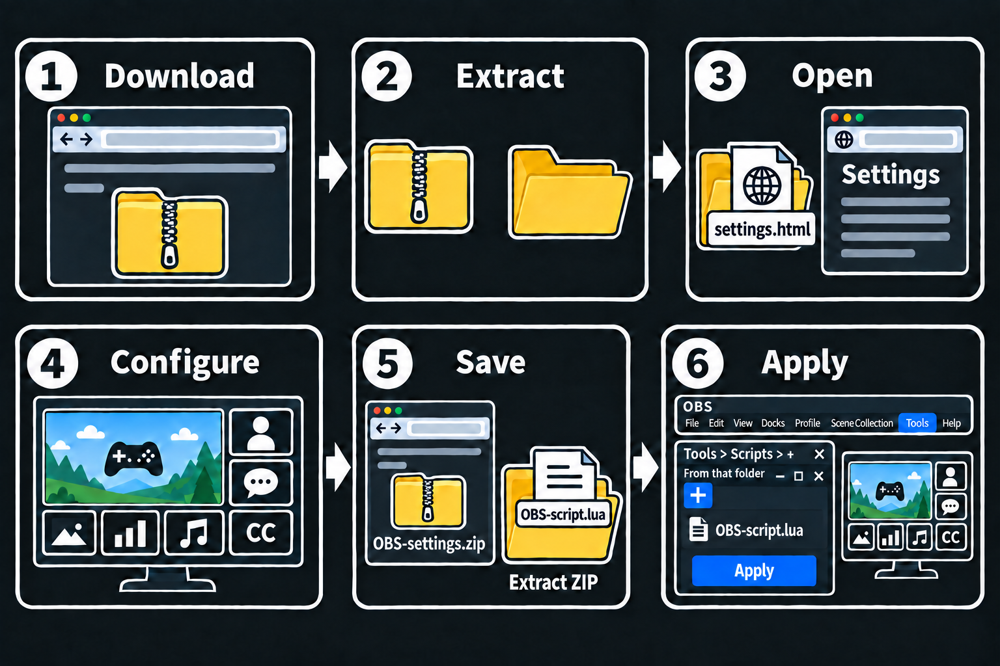

설정하고 OBS에 적용하기
Windows OBS 32: Composite Blur — 패널 배경 블러 플러그인이 ZIP에 포함되어 있습니다. OBS를 닫고 composite-blur-install.cmd를 한 번 실행하세요. 최초 ZIP의 최상위 settings.html 옆에 있습니다. 별도 다운로드나 수동 복사는 필요 없습니다. Windows x64 OBS 30–32와 33은 버전에 맞는 동봉 파일을 선택합니다. macOS는 composite-blur-install.command, Linux 네이티브 Debian/Ubuntu amd64는 composite-blur-install.sh를 사용합니다. OS 설치 창의 권한·의존성 확인은 직접 승인해야 합니다. macOS·Linux 실제 설치 검증과 Flatpak 오프라인 확장 동봉은 아직 완료하지 않았습니다.
그림의 순서대로 시작하세요. 자세한 내용은 아래 제목을 눌러 확인합니다.
Bento는 패널을 나란히, Overlap은 전체 화면 Main 위에 패널을 배치합니다. 원하는 레이아웃을 선택해 시작하세요. Bento의 패널 배경은 별도로 지정한 전체 배경 이미지·색상입니다. Overlap의 패널 배경은 Main 화면이며, 캡처가 비면 지정 배경을 유지합니다.
빠른 시작

- 1배포 ZIP 다운로드
- 2전체 압축 해제
- 3
settings.html열기 - 4패널·콘텐츠 설정
- 5ZIP 파일로 저장 → 전체 해제
- 6Lua 추가 → 소스 선택 → 적용
그림의 ZIP·스크립트 이름은 예시입니다. 실제 파일명은 선택한 레이아웃에 따라 Settings-Bento.zip 또는 Settings-Overlap.zip이고, 스크립트는 script-bento.lua 또는 script-overlap.lua입니다.
개인 ZIP을 풀면 최상위에는 script-bento.lua 또는 script-overlap.lua가 있습니다. 바로 옆의 files/bento/ 또는 files/overlap/ 폴더를 함께 보관하세요.
필수 안내
1. OBS 준비
OBS Studio 30.1 이상에서 브라우저 소스와 도구 → 스크립트를 사용할 수 있어야 합니다.
설정 → 비디오의 기본 캔버스를 1920 × 1080으로 사용합니다. 기존 방송 프로필이 다른 크기라면 별도 프로필을 만들거나 선택하세요. 기존 방송 프로필을 임의로 바꾸지 마세요.
2. 배포 파일 열기
배포 파일 ALO4OBS-v0.10.4.zip을 전체 압축 해제하고 루트의 settings.html을 엽니다. 이 파일은 files/settings.html을 엽니다. ZIP 안에서 HTML을 실행하지 마세요.
3. 패널과 콘텐츠 선택
Bento에서는 Main · Sub 1–3 · Side 1–3, Overlap에서는 Main · Panel 1-1부터 Panel 5-3까지 중 설정할 패널을 선택합니다. 콘텐츠 종류에서 없음 · OBS 소스 · 웹 주소 · 이미지/영상을 고릅니다. 각 패널은 게임·채팅·캠 용도로 고정되어 있지 않습니다.
OBS 소스를 쓰려면 OBS에서 개별 캡처·카메라 소스를 먼저 만들고 영상이 나오는지 확인합니다. 장면과 그룹은 패널 소스로 선택할 수 없습니다. 웹 주소에는 제공자의 OBS 표시용 URL을, 이미지/영상에는 업로드 파일이나 직접 미디어 URL을 입력합니다. 동영상 시청 페이지 주소는 미디어 파일 주소가 아닙니다.
4. 배치와 스타일 설정
Bento에서는 패널 개수, Main/Sub 위아래 순서, Side 열 위치, 크기와 간격을 설정합니다.
Overlap에서는 열별 표시 여부와 패널 개수(1–3개)를 설정합니다. 1·3·5열의 더 넓은 너비를 켜면 5열 기준에서 3열 기준 너비로 바뀌고 인접 열은 비활성화됩니다. 패널은 이름의 열에 고정됩니다. 높이는 자동으로 남은 공간을 나누거나 수동으로 픽셀 값을 정합니다. 패널 위치의 자동은 열 전체를 상단·중앙·하단에 정렬하고, 수동은 원하는 Y 좌표를 저장합니다. 높이는 최소 128px이며 패널 순서와 화면 가장자리·패널 사이 간격을 유지하도록 실제 위치와 높이를 제한합니다. 다른 설정이 바뀌면 저장한 Y와 실제 적용 Y가 다를 수 있습니다. 미리보기에서 세로로 드래그하면 수동 위치로 전환됩니다. 숨긴 패널의 설정은 유지됩니다. 안전영역은 게임마다 다른 미리보기 안내이며, 빨강·노랑 경고는 배치를 막지 않습니다.
상단 헤더 오른쪽의 레이아웃 전환으로 두 화면을 바꿉니다. 각 배치와 패널 설정은 유지되고 Main 콘텐츠와 전역 스타일은 공유됩니다. 미리보기로 배치를 확인하세요. 실제 OBS 소스 영상은 OBS에서 확인하세요.
5. 개인 ZIP 저장·압축 해제
ZIP 파일로 저장을 누릅니다. 결과는 개인 적용 패키지 Settings-Bento.zip / Settings-Overlap.zip입니다. 배포 파일 ALO4OBS-v0.10.4.zip과 구분하세요.
Settings-Bento.zip / Settings-Overlap.zip을 새 영구 보관 폴더에 전체 압축 해제합니다. script-bento.lua 또는 script-overlap.lua, JSON 설정, 마스크, assets/, 실행 파일을 함께 둡니다. 스크립트 위치를 기준으로 파일을 읽으므로 Lua만 옮기면 경로가 깨집니다. OBS 실행용 패키지에는 설정 편집기가 없습니다.
6. OBS에 연결하고 확인
OBS의 도구 → 스크립트 → +에서 방금 압축 해제한 개인 폴더에서 사용하는 레이아웃의 스크립트 script-bento.lua 또는 script-overlap.lua를 선택합니다. 두 레이아웃을 모두 쓴다면 같은 폴더에 풀고 둘 다 추가해도 됩니다. 이름이 달라 OBS 스크립트 목록에서 구분됩니다.
표시할 OBS 소스 패널마다 스크립트의 같은 패널 이름의 선택기에서 원본 소스를 선택합니다. 다른 패널에는 서로 다른 소스를 사용합니다. 선택기를 비워 두면 의도적으로 빈 패널을 둘 수 있습니다. 저장한 설정 / 자동 배치 적용을 누릅니다.
생성된 ALO4OBS · BENTO 또는 ALO4OBS · OVERLAP 장면을 엽니다. 저장한 레이아웃의 장면만 생성·갱신됩니다. 두 장면을 모두 쓰려면 각 레이아웃을 ZIP으로 저장하고 각각 한 번씩 적용하세요. 캡처·카메라·웹 위젯·미디어가 실제로 나오는지 OBS에서 확인한 뒤 방송에 사용합니다. 브라우저 변경은 OBS에 자동 반영되지 않습니다. ZIP 재저장 → 전체 압축 해제 → 새 스크립트 경로 등록 또는 적용 폴더 갱신·스크립트 다시 불러오기 → 소스 선택 확인 → 자동 배치 적용이 필요합니다.
추가 팁
배치 컨트롤
Bento의 기본 배치에서는 Main과 Sub 1~3이 왼쪽 프레임에, Side 1~3이 오른쪽 프레임에 위에서 아래로 놓입니다. Main은 항상 켜져 있습니다. Sub 개수와 Side 개수 슬라이더로 각각 1·2·3개를 고르세요. Sub는 왼쪽부터, Side는 위쪽부터 선택한 개수만큼 켜집니다. Main·Sub 위아래 바꾸기 스위치로 두 묶음의 위아래를 바꿉니다. Side 열 왼쪽에 놓기 스위치를 켜면 Side 열 전체가 왼쪽으로, Main·Sub 프레임이 오른쪽으로 이동합니다. Side 1~3의 위아래 순서는 유지됩니다.
전역 설정의 간격은 패널 사이 간격과 화면 가장자리 여백을 함께 정합니다. 매우 좁음 8px · 좁음 16px · 보통 24px · 넓음 32px(기본) · 매우 넓음 48px 중에서 고릅니다. Side 프레임은 왼쪽·오른쪽 위치와 무관하게 너비 440px을 유지하고 Main·Sub 프레임이 나머지를 씁니다.
Side 1~3의 높이와 Sub 1~3의 너비를 자동 또는 수동으로 선택할 수 있습니다. Main과 Side의 너비는 항상 자동입니다. 자동은 남은 공간을 채우고, 수동은 숫자 입력이나 슬라이더로 정한 픽셀 크기를 유지합니다. 활성 패널·간격·다른 수동 크기에 따라 입력 한도가 갱신됩니다. 켜진 Sub가 모두 수동인데 너비 합이 프레임과 맞지 않으면 크기를 바꾸지 않고 Sub 너비 설정 옆에 빈 공간 또는 넘침 경고를 보여 줍니다. 넘칠 때도 저장과 OBS 적용은 되며, 화면에서는 Sub 너비가 프레임에 맞게 줄어듭니다.
업로드한 이미지·영상은 같은 브라우저에서 같은 설정 페이지를 다시 열면 복원될 수 있습니다. 브라우저 데이터를 지우거나 파일을 옮기기 전에 설정 ZIP을 저장해 두세요.
Sub의 최소 너비는 Main이 16:9일 때의 기준 행 높이입니다(기본 206px). 그 외 최소값은 자동 크기의 50%, 최대값은 150%를 기준으로 하며 프레임과 다른 패널의 공간에 맞춰 제한합니다. Sub의 높이는 자동입니다. Main은 화면 비율에서 자동·16:9(기본)·21:9·32:9를 선택합니다. 자동은 Sub 묶음을 제외한 남는 높이를 채웁니다. 다른 축의 크기로 계산한 1:1·16:9 눈금 가까이 드래그하면 해당 비율에 맞춰집니다. 숫자 입력과 키보드는 정확한 값을 그대로 사용합니다.
OBS 버전과 검증 범위
스크립트는 OBS Studio 30.1에서 추가된 obs_sceneitem_get_info2 / obs_sceneitem_set_info2를 사용합니다. Windows OBS 32.2.2의 격리 환경에서 Bento·Overlap 적용과 재적용을 확인했습니다. macOS, 실제 캡처·카메라, 개인 웹 위젯과 방송 출력은 아직 검증하지 않았으므로 사용 환경에서 확인하세요.
기존 ALO4OBS 업데이트
업데이트 전 OBS 장면 모음을 내보내고 기존 적용 폴더 전체를 백업한 뒤 스크립트의 패널별 소스 선택을 기록합니다. 기존 패키지는 그대로 보관하고 새 배포 파일은 별도 폴더에 풉니다.
설정 편집기는 JSON 가져오기가 아닌 config.js를 읽습니다. 기존 스크립트의 적용이 성공하면 개인 적용 폴더(타입별 패키지는 files/bento/ 또는 files/overlap/)에 생성된 config.js를 새 배포 폴더의 files/로 복사합니다. 그 파일의 assets/... 경로가 가리키는 개인 미디어만 같은 상대 경로로 복사하세요. 새 config.public.js, 내부 스크립트, 글꼴은 교체하지 않습니다. config.js가 없으면 기존 버전에서 자동 배치를 한 번 적용해 생성하거나, 기존 환경을 보관하며 새 버전을 수동 설정하세요. JSON 이름 변경은 가져오기 방법이 아닙니다. 새 경로에서는 브라우저 임시 설정 복원을 보장할 수 없습니다.
새 루트의 settings.html에서 설정·미디어를 확인하고 새 Settings-Bento.zip / Settings-Overlap.zip을 저장한 뒤 새 영구 폴더에 풉니다. 소스 선택 기록 후 기존 Lua 등록만 제거합니다(장면은 삭제되지 않음). 이전 패키지의 스크립트 이름은 OBS-script.lua였습니다. 새 패키지는 레이아웃별 script-bento.lua 또는 script-overlap.lua이므로, 옛 이름의 등록은 목록에 남기지 말고 새 이름의 파일을 추가하세요. 새 Lua 경로를 등록하고 적용 전에 원본 소스를 다시 선택하세요. 새 등록은 JSON에서 기존 선택기 값을 물려받지 않습니다.
구형 OST에서 전환
기존 OBS Streaming Template 장면, OST · 그룹, 원본 소스, 스크립트 폴더 전체를 보관합니다. 장면 모음을 내보내고 소스 선택을 기록한 뒤 기존 스크립트 등록만 중단·제거합니다. Lua 파일과 백업은 남깁니다. 새 버전에서 같은 원본 소스를 쓰도록 설정하고 새 스크립트를 등록한 뒤 소스를 다시 선택해 적용합니다.
새 ALO4OBS · BENTO 또는 ALO4OBS · OVERLAP 장면은 별도로 생성됩니다. 기존 ALO4OBS와 OST 장면은 자동 이관하지 않습니다. 확인 후 전환하고 기존 장면은 복구용으로 보관하세요. 소스와 그룹을 일괄 삭제하지 마세요.
복구와 검수 범위
자동 배치는 선택한 타입의 ALO4OBS · BENTO 또는 ALO4OBS · OVERLAP 장면과 같은 이름으로 시작하는 소스·그룹을 재사용합니다. 원본 소스 설정·필터는 유지하며, 생성된 장면 항목의 위치·크기·배치는 저장한 설정으로 다시 적용합니다.
업데이트를 되돌릴 때는 업데이트 전 장면 모음 백업을 별도 복구용 장면 모음으로 가져오고, 같은 버전의 Lua와 적용 폴더 전체를 복원한 뒤 원본 소스 할당을 확인합니다. 같은 타입에 다시 적용하면 그 장면과 생성된 브라우저 소스의 local_file 경로가 갱신되므로, 이전 Lua만 등록해도 이전 상태로 복원되는 것은 아닙니다. 기존 단일 ALO4OBS 또는 OST 장면이 별도로 남아 있다면 확인 후 그 장면으로 전환할 수 있습니다. 실제 실패 후 전체 복구, macOS, OS 파일 선택 화면은 아직 검증하지 않았습니다.
예약된 이름과 공유 소스
생성된 소스·그룹 이름은 ALO4OBS · BENTO · 또는 ALO4OBS · OVERLAP ·로 시작합니다. 이를 다른 장면에서 재사용하면 갱신된 내용을 공유합니다. 비활성 그룹의 원본 소스는 숨겨진 최상위 항목으로 보존됩니다. 예약 이름 충돌 오류가 나오면 해당 항목을 확인하고 필요하면 백업에서 복구하세요. 관련 없는 소스를 임의로 삭제하지 마세요.
웹 위젯 주소는 어디서 가져오나요?
채팅·번역·후원 등 원하는 서비스에서 OBS 표시용 위젯 URL을 복사해 원하는 패널의 웹 주소에 입력합니다. 서비스의 설정 화면 주소와 표시용 주소는 다를 수 있습니다. 위젯 내부 글꼴·색·소리·작동은 제공자에서 설정하세요.
프레임 구조, 모서리, OBS 위치는 어떻게 동작하나요?
전역 설정의 모서리 둥글기는 간격과 별도로 8·16·24·32·48px를 선택합니다. 모서리 스무딩은 0%·iOS 60%·100%입니다. 처음 설정할 때 Windows는 0%, macOS는 60%가 기본이며 저장한 선택은 유지됩니다. 전역 설정에서 그림자 사용을 켜고 강도를 다섯 단계로 조절합니다. 패널의 전역 설정 대신 개별 설정을 켜면 채우기·테두리와 함께 그림자를 조절할 수 있습니다. 끄면 전역 그림자를 따르며 기존 개별 값은 보관됩니다. Overlap Main은 전체 화면 배경이므로 그림자를 사용하지 않습니다.
OBS에서 직접 옮긴 위치는 다음 자동 배치 때 저장된 배치로 돌아옵니다. 원본 OBS 소스 설정을 보존하도록 설계되었으며 투명 모서리용 알파 마스크는 템플릿 전용 그룹에 적용됩니다. 같은 설정을 재적용해도 템플릿 소스가 중복 생성되지 않습니다.
화면이 비거나 이전 설정이 보여요
- 브라우저가 로컬 파일 접근을 막으면 일부 미리보기가 비어 있을 수 있습니다. 입력과 ZIP 저장은 계속 가능하며 OBS에서 확인하세요.
- ZIP을 재저장하고 전체 압축 해제한 뒤 새 경로 등록 또는 적용 폴더 갱신·스크립트 다시 불러오기, 소스 선택 확인, 자동 배치 적용을 진행합니다. 필요하면 OBS 브라우저 소스 캐시를 새로고침합니다.
- 웹 위젯은 OBS 표시용 주소인지 확인합니다. 제공자의 채널이나 프로그램이 꺼져 있으면 비어 있을 수 있습니다.
개인 링크를 공유해도 되나요?
위젯 URL에는 비공개 토큰이 들어갈 수 있습니다. 설정 파일과 설정 ZIP을 공개 저장소나 채팅에 올리지 마세요.